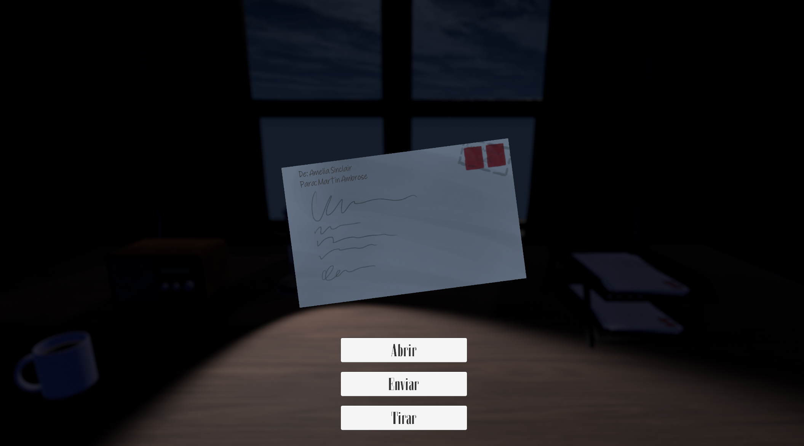
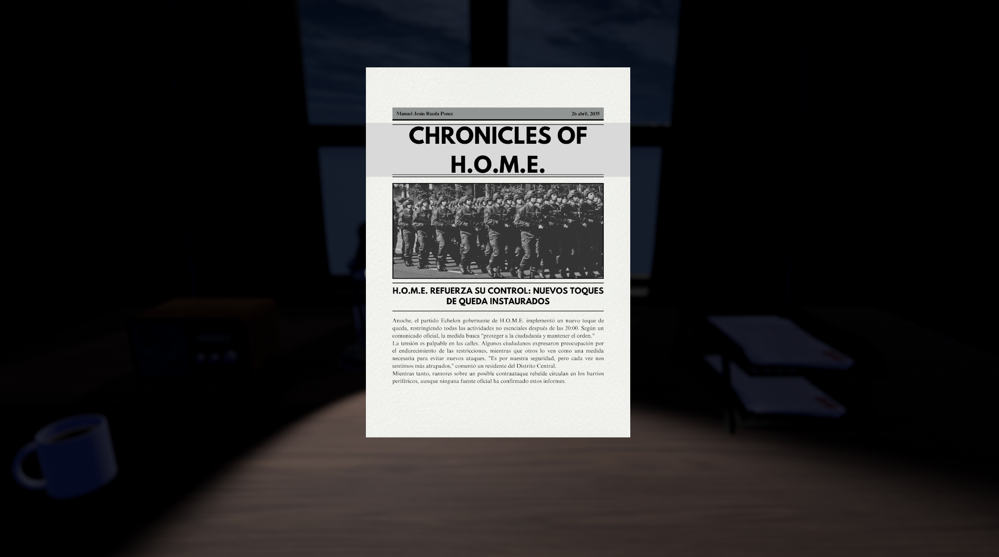

Sobre el juego
H.O.M.E. es un juego narrativo ambientado en un futuro distópico, donde el gobierno de una ciudad controla cada aspecto de la vida de su población evitando la comunicación con el exterior bajo un régimen de ley marcial impuesto tras un ataque rebelde. Sin embargo, una excepción ha surgido: el uso de cartas.
Tú, como jugador, decides trabajar en esta red de mensajería, encargado de filtrar las cartas antes de que lleguen a sus destinatarios. Tu papel es crucial: ¿entregarás las cartas, permitiendo conexiones humanas y riesgos para el régimen? ¿O las desecharás, apoyando el control autoritario?
Cada decisión que tomes afectará no solo la vida de los personajes y sus relaciones, sino también el curso de la historia, llevándote a distintos finales basados en tus acciones.
Galería


